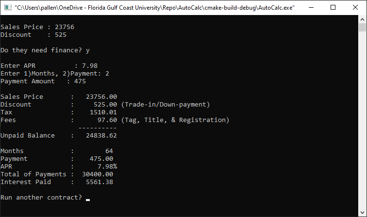

The first business program I wrote was for my family's used car business to calculate finance charges on buy-here-pay-here car sales. Used car businesses, at the time, did not have the resources to calculate compounding interest (no MS Excel or the Internet), and the banks would charge $100 to call in and request a rate lookup from a table in a book. Needless to say our family sold copies of this program to other dealers in town for $900 each. The program was written in Basic language on a Sharp PC-1401 programmable calculator with 4K of memory and a small thermal printer with serial connector. A cassette player could be connected to the printer to save/write the program on a metallic cassette.
In this assignment, you will write a C++ program that a car dealer can use during the sale of a car. The dealer will enter the sales price and discounts on the car and calculate taxes and fees to produce a Bill-of-Sale showing the unpaid balance of the car. The program will then prompt the dealer to indicate if the customer is paying cash, or requesting a loan. If the customer wishes to make payments to the dealer, then the dealer processes a loan. The dealer enters the annual percentage rate (Bankrate.com), and then indicates if the customer wishes to make a set number of monthly payments, i.e. 60 months (5 years), or if they would like to set a fixed monthly payment amount. After collecting the number of months or fixed payment amount, the program should calculate either the monthly payment amount given the principle, annual percentage rate, and number of months, or the number of monthly payments given the principle, annual percentage rate, and monthly payment amount. The total of payments can then be calculated as months * payment, and the interest paid as total of payments - principle. Lastly, the program should print out a well formatted Bill-of-Sale and Loan if financing is being offered.
Sample I/O:
This assignment focuses on core C++ programming concepts to include:
Global constants: Constants increase the readability of programs by replacing meaningless literals with words that document their use. Constants should be used for any literals that represent values that would not change often, since modifying them requires recompiling the program. Placing select constants in global scope makes their values available throughout the program without a need to pass them as parameters. Having them located at the top of the file provides ease of locating them, and for modifying them when configuration values change. Global constant names should be in ALL_CAPS to help identify them as global constants quickly in source code.
Add the following global constants to your program (identifier, data-type, value)
Structs: Structs are a C programming concept that allows a programmer to build a user defined data type made up of sub-properties that can have different data-types. The main purpose of the struct is to consolidate data logic of a program by placing multiple related variables into a single variable that can passed around to functions. This further simplifies function definitions by reducing the number of parameters defined and arguments passed. Structs, like other type-definitions, should be defined in global scope at the top of the file to make them available for use in function declarations and source code. Struct names should be in UpperCamelCase. The leading capital letter helps identify them as a user defined data type
Add the following structs to your program (identifier: property name, data-type, description)
Functions: Functions provide a way to modularize a program or consolidate logic into concise blocks that promote readability and reusability. In general, any single block of code that takes more than one screen height increases complexity in a program by forcing the reader to scroll up and down to follow logic. Any areas of code that must be written more than once can be moved to functions reducing overall code and simplifying maintenance. Multiple blocks of code can sometimes be consolidated just by introducing a parameter that provides a simple logic switch to handle minor differences. Some blocks of code can be generalized into functions that will serve many programs, which can speed up development and testing of future projects. Like variables, function identifiers should be in lowerCamelCase
Add the following functions to your program
P = (r * PV) / (1 - (1 + r)^(-n))
Where:
To break down the formula further:
r = (Annual Interest Rate) / (12 * 100)
n = Number of Years * 12
To calculate the number of periods (months) required to repay a loan with a set monthly payment, you can use the logarithmic functions. The formula is:
Where:
Let's say you have a loan amount of $10,000, an annual interest rate of 6%, and a monthly payment of $200. First, you would need to convert the annual interest rate to a monthly interest rate:
r = 0.06 / 12 = 0.005
Now you can plug in the values into the formula:
n = ln((PMT / (PMT - r * PV))) / ln(1 + r)
Calculate the denominator first:
ln(1 + r) ≈ 0.002166
Next, calculate the numerator:
(PMT / (PMT - r * PV)) ≈ 1.333333
ln(1.333333) ≈ 0.124939
Now, divide the numerator by the denominator:
n ≈ 0.124939 / 0.002166 ≈ 57.68013596
Since the number of periods (months) must be a whole number, you would round up to the nearest whole month:
n ≈ 58
So, it would take approximately 58 months to repay the loan with a $200 monthly payment and a 6% annual interest rate on a $10,000 loan amount. Keep in mind that this is a simplified example and doesn't account for factors like compounding frequency, additional fees, or changes in interest rates over time.